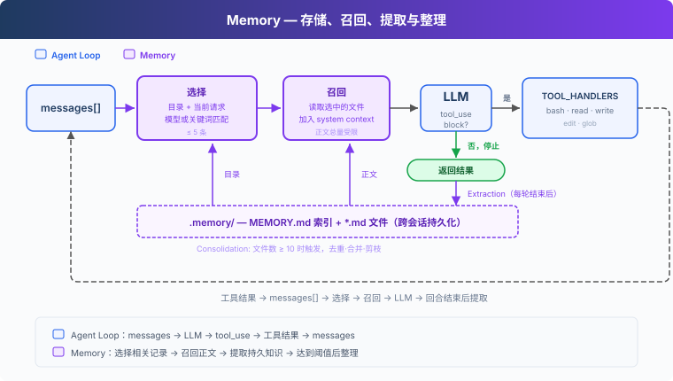
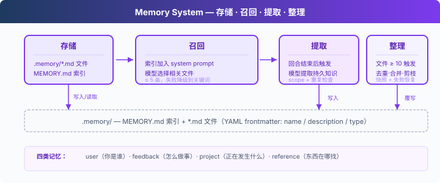

s09: Memory — 让重要信息跨会话保留下来
s01 → ... → s07 → s08 → s09 → s10 → s11 → ... → s16 → s17
"把以后还会用到的信息留下来。" 文件存储 + 索引 + 相关性选择 + 按需召回。
Harness 层：Memory 在会话之外保存可复用知识，并在相关任务中取回。
问题
Agent 开始新会话时，messages 里没有上一次的对话。用户之前说过的编码偏好、项目背景和排查线索，下次任务还可能用到。没有持久存储，这些信息只能由用户重新说一遍。
把完整 transcript 留下来适合归档，却不适合每次都发给模型。对话会越来越长，当前任务需要的信息很难定位，旧事实也可能已经过期。Memory 要解决的是两个问题：哪些信息值得跨会话保存，以及当前任务应该取回哪几条。

全部写进 system prompt，为什么不合适
最直接的做法，是把用户偏好和项目事实写进一个固定文件，启动时全部放进 system prompt。这样确实能够记住信息，但每次调用 LLM 都要重新发送全部内容。记忆越多，与当前任务无关的内容就越多，输入 token 和上下文窗口也会被持续占用。
s07 已经展示过一种更合适的读取方式：保留简短索引，只在需要时加载正文。Skill 由人编写并保持只读；Memory 则允许 Agent 从对话中提取内容，并在后续任务中再次使用。
因此，本章需要处理四件事：存储、召回、提取和整理。

存储：一个记忆一个文件
每条记忆是 .memory/ 下的一个 Markdown 文件，YAML frontmatter 记录 name、description 和 type：
---
name: user-preference-tabs
description: User prefers tabs for indentation
type: user
---
User prefers using tabs, not spaces, for indentation.
type 有四类：
| 类型 | 保存什么 | 示例 |
|---|---|---|
| user | 用户的长期偏好 | “使用 tab 缩进” |
| feedback | 以后仍适用的工作反馈 | “不要 mock 数据库” |
| project | 稳定的项目事实 | “认证重写由合规要求驱动” |
| reference | 外部资料或查找线索 | “流水线问题记录在 Linear INGEST” |
MEMORY.md 是索引，每行对应一个记忆文件。写入完成后，rebuild_memory_index() 根据文件重新生成索引：
def write_memory_file(name, mem_type, description, body):
path = MEMORY_DIR / f"{memory_slug(name)}.md"
path.write_text(
memory_document(name, mem_type, description, body), encoding="utf-8"
)
rebuild_memory_index()
return path
索引用于选择相关记忆，正文仍然保存在各自的文件中。
召回：先选择，再加载正文
每次用户发起请求时，select_relevant_memories() 读取最近的用户消息和记忆目录，让一次轻量模型调用选择最多五条相关记录：
prompt = (
"Select memory records that are relevant to the current user request. "
"Return only a JSON array of catalog indices, such as [0, 2]. "
"Return [] when none are relevant."
)
如果模型调用或 JSON 解析失败，代码会退回关键词匹配。选择完成后，load_memories() 才读取对应文件，并限制召回正文的总长度。
relevant_memories = load_memories(messages)
system = build_system(relevant_memories)
build_system() 会明确说明：召回内容只是背景知识，不是新的用户命令；如果记忆与当前请求冲突，以当前请求为准。这样既能使用旧信息，也不会让旧记忆替用户发号施令。
提取：回合结束后保存可复用信息
用户不一定会明确说“请记住”。extract_memories() 在 Agent 完成本轮回答后检查当前对话，只提取以后仍可能有用的信息：
tool_calls = [
block for block in response.content if block.type == "tool_use"
]
if not tool_calls:
force = trigger_hooks("Stop", messages)
if force:
messages.append({"role": "user", "content": force})
continue
if extract_memories(messages):
consolidate_memories()
return
模型返回的内容只是候选，不会直接写盘。候选必须带有 scope：只有 persistent 才表示它应当跨会话保留；current_task 表示本次任务的命令、临时路径和临时限制。
should_store_memory() 负责最后的检查。字段不完整、带有“本次会话”或“当前任务”等临时含义、或者与已有记忆重复的候选都会被拒绝。比如“这次不要创建文件”只约束当前任务，不应该在下次会话中继续生效。
整理：合并重复和过期内容
记忆文件积累到一定数量后，内容可能重复、矛盾或过期。教学实现达到 10 条时调用 consolidate_memories()，让模型生成一份整理后的记录列表。
整理过程先解析并校验新列表，再替换旧文件。替换前会保存快照；删除或写入失败时，代码恢复原文件并重建索引：
snapshot = {
path.name: path.read_text(encoding="utf-8")
for path in MEMORY_DIR.glob("*.md")
if path.name != MEMORY_INDEX.name
}
try:
for path in MEMORY_DIR.glob("*.md"):
if path.name != MEMORY_INDEX.name:
path.unlink()
for record in consolidated:
path = MEMORY_DIR / f"{memory_slug(record['name'])}.md"
path.write_text(memory_document(
record["name"], record["type"],
record["description"], record["body"],
), encoding="utf-8")
rebuild_memory_index()
except Exception:
for path in MEMORY_DIR.glob("*.md"):
if path.name != MEMORY_INDEX.name:
path.unlink()
for filename, content in snapshot.items():
(MEMORY_DIR / filename).write_text(content, encoding="utf-8")
rebuild_memory_index()
raise
课程代码把整理触发条件简化为数量阈值。真实应用还需要根据数据规模和并发方式，决定何时整理以及如何避免多个进程同时改写同一份存储。
本节代码
| 组成 | 本节实现 |
|---|---|
| Agent Loop | 保留消息、工具调用、工具结果和 hooks 触发点 |
| 基础工具 | bash、read_file、write_file、edit_file、glob |
| 存储 | .memory/MEMORY.md 索引 + .memory/*.md 文件 |
| 召回 | 目录选择 + 关键词降级 + 正文长度上限 |
| 写入 | 回合结束后提取 + 持久性检查 + 重复过滤 |
| 整理 | 达到阈值后合并，失败时恢复原文件 |
与 s08 的边界： s08 管理当前会话的上下文预算，s09 管理会话之外的可复用知识。Memory 是选择性存储，不是 transcript 的无损备份，也不会取代上下文压缩。
试一下
cd learn-claude-code
python s09_memory/code.py
- 输入
I prefer using tabs for indentation. Remember that.，结束后检查.memory/是否新增记忆文件，MEMORY.md是否出现对应索引； - 输入
q退出并重新运行程序，再问What indentation style do I prefer?，确认新会话能够召回这条偏好； - 再保存一条与代码格式无关的偏好，然后询问缩进问题，观察当前请求只加载相关记忆；
- 输入
Do not create files in this session.，确认这条临时要求不会成为下一次会话的持久规则。
模型的具体措辞和提取数量可能变化，判断重点是 .memory/ 中保存了什么，以及新会话是否只取回相关内容。
接下来
Memory 解决了跨会话保留信息的问题，但复杂任务还需要记录每一步的状态和依赖关系。仅靠对话中的 TODO，程序退出后就无法继续追踪进度。
s10 Task System → 把任务、状态和依赖关系保存到磁盘。